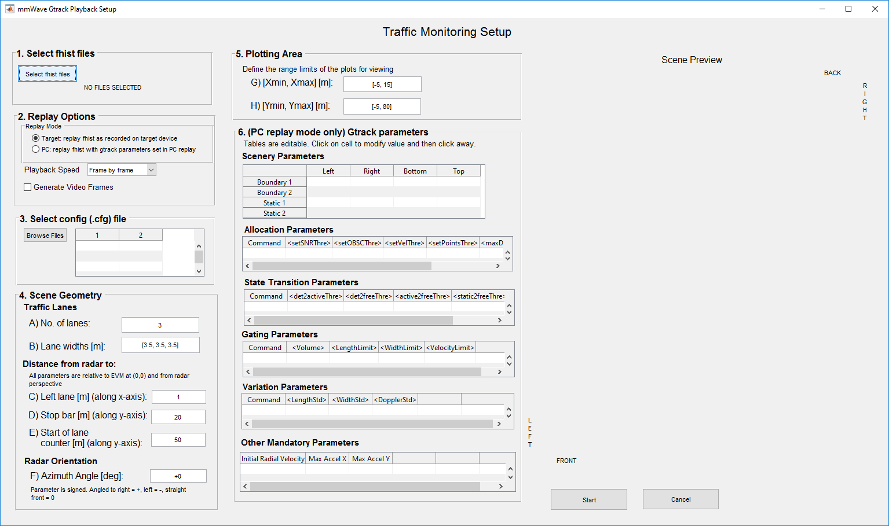

Gtrack Tuning for Traffic Monitoring Overview
===========
The Traffic Monitoring lab uses gtrack, a high-level clustering and tracking algorithm, to enable multivehicle tracking across multiple lanes. This guide and the PC-based tool **tm_play** enables the ability to replay data captured using the Traffic Monitoring lab and then tune gtrack parameters offline.
<img src="images/tm_intro.gif" width="600"/>
Quickstart
===========
The quickstart will walk through how to replay data captured using the Traffic Monitoring lab and an [xWR1642 EVM](http://www.ti.com/tool/IWR1642BOOST). This document assumes that the Traffic Monitoring lab has already been successfully executed.
1. Software Requirements
-----------
### Software
Tool | Version | Required For |Details
----------------------------|---------------------------|---------------|--
tm_play.exe| Latest - Industrial Toolbox | - | Located at `<mmwave_industrial_toolbox_install_dir>\labs\lab0013-traffic-monitoring-16xx\gui\tm_play.exe`
MATLAB Runtime | 2017a (9.2) | tm_play.exe | The [runtime](https://www.mathworks.com/products/compiler/matlab-runtime.html) is sufficient.
2. Launch tm_play
-----------
To launch the tool, navigate to `<mmwave_industrial_toolbox_install_dir>\labs\lab0013-traffic-monitoring-16xx\gui`, and double click on **tm_play.exe** to launch the setup window. Note: A console window will appear first and then after a delay (~30sec) the setup window will appear.
3. Using tm_play
-----------
Pre-requisite: fhist files generated from running the Traffic Monitoring lab. Sample fhist files are provided in `gui\sample_fhist`
Note: This tool will enable iterating on gtrack parameters to improve tracking performance. However, it is critical to ensure that a rich point cloud is collected for the objects of interest in the scene. This tool does not affect and can not improve detection points.
The general suggested steps for using tm_play are as follows:
1. Use tm_play to replay data as it was captured on the target (IWR1642) device.
2. Relaunch tm_play to iterate on gtrack parameters as needed and view effects.
3. Generate .mp4 videos if desired of tm_play output
### 1. Replay target data

To replay data as collected on the target device:
1. Click on **Select fhist files** - browse to and specify the fhist files desired - multiple files can be selected.
* Sample fhist files are provided in `gui\sample_fhist`
* A message will update to the right once fils have been selected. If multiple files were selected only the first and last file are listed.
2. Replay options: select **Target replay**
* Playback speed can either be frame by frame (slow), medium, or fast.
* Note if Generate video frames is enabled playback is forced to be slow)
3. Click on **Browse files** to specify the chirp configuration that was used to generate the fhist files.
* If using the sample_fhist files, select **mmw_tm_demo_ph2.cfg** in `<mmwave_industrial_toolbox_install_dir>\labs\lab0013-traffic-monitoring-16xx\chirp_configs`
4. Scene Geometry parameters: modify to match the settings used during data capture.
* The default values can be used with the sample_fhist files.
5. Plotting area: modify to zoom in or out of the plots. The parameters will update the scene preview to the right.
6. Click **Start** in the bottom right to launch the replay.
7. The replay window will appear as shown below. In the far right group of tabs, either the Doppler Map or Cumulative Cloud can be selected.
8. To **exit** the tm_play tool either during or after all the frames have been replayed, click on the **Exit** button near the bottom left of the window. Depending on playback speed click may be missed and several clicks may be needed to register the exit command.
### 2. Modify gtrack parameters and rerun tracker.
To rerun gtrack algorithm with different parameters and tune tracker behavior for collected point cloud data, launch a new session of tm_play:
1. Click on **Select fhist files** - browse to and specify the fhist files desired - multiple files can be selected.
* Sample fhist files are provided in `gui\sample_fhist`
* A message will update to the right once fils have been selected. If multiple files were selected only the first and last file are listed.
2. Replay options: select **PC replay**
* Playback speed can either be frame by frame (slow), medium, or fast.
* Note if Generate video frames is enabled playback is forced to be slow)
3. Click on **Browse files** to specify the chirp configuration that was used to generate the fhist files.
* If using the sample_fhist files, select **mmw_tm_demo_ph2.cfg** in `<mmwave_industrial_toolbox_install_dir>\labs\lab0013-traffic-monitoring-16xx\chirp_configs`
4. Scene Geometry parameters: modify to match the settings used during data capture.
* The default values can be used with the sample_fhist files.
5. Plotting area: modify to zoom in or out of the plots. The parameters will update the scene preview to the right.
6. **Gtrack parameters**: these parameters are prepopulated from the values in the .cfg file selected in step 3. However, they can be modified and the new values will be applied to implement the group tracker.
* NOTE: the **Other mandatory parameters** are not specified by the .cfg file (or cli commands). Here they must be entered in by the user.
* Values the can be used for the sample_fhist files are [-5, 0, 4] for [Initial Radial Velocity, Max Accel X, Max Accel Y]
* For more details on the meaning of these gtrack parameters please refer to:
* <a href="http://www.ti.com/tool/TIDEP-0090" target="_blank">TI Design document</a>
* [Tracking_radar_targets_with_multiple_reflection_points.pdf](..\src\mss\gtrack\docs\Tracking_radar_targets_with_multiple_reflection_points.pdf)
7. Click **Start** in the bottom right to launch the replay.
8. The replay window will appear as shown below. In the far right group of tabs, either the Doppler Map or Cumulative Cloud can be selected.
9. To **exit** the tm_play tool either during or after all the frames have been replayed, click on the **Exit** button near the bottom left of the window. Depending on playback speed click may be missed and several clicks may be needed to register the exit command.
### 3. Export to video
* To save a video of a replay, relaunch tm_play.exe and make sure to check to enable **Generate Video Frames** in step **2. Replay options..** of either **1. Replay target data** or **2. Modify gtrack parameters and rerun tracker**.
* Proceed as outlined above. Note that the generation of video frames will cause the playback to run considerably slower and take awhile.
* After the playback is complete, a file **tmFrames.mat** will be saved to the same directory the selected fhist files were located.
* After tmFrames.mat has been generated, double click on **tm_genvideo.exe**.
* This will open a file navigation window. Select the desired tmFrames.mat file.
* The program will then generate a video, tmVid.mp4, in the same directory as the tmFrames.mat file.
Gtrack References
===========
* <a href="http://www.ti.com/tool/TIDEP-0090" target="_blank">TI Design document</a>
* [Tracking_radar_targets_with_multiple_reflection_points.pdf](..\src\mss\gtrack\docs\Tracking_radar_targets_with_multiple_reflection_points.pdf)
Need More Help?
===========
* Find more details about Traffic Monitoring from the <a href="http://www.ti.com/tool/TIDEP-0090" target="_blank">TI Design document</a>
* Find answers to common questions on <a href="https://e2e.ti.com/support/sensor/mmwave_sensors/w/wiki" target="_blank">mmWave E2E FAQ</a>
* Search for your issue or post a new question on the <a href="https://e2e.ti.com/support/sensor/mmwave_sensors/f/1023" target="_blank">mmWave E2E forum</a>